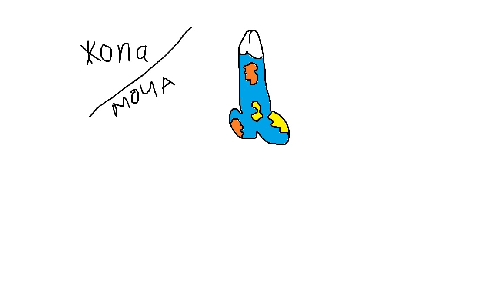

JOPA

ETO POLNAYA MOCHA! PISAL JE- KODIROVKA ANSI!
Platon vsegda bil prav, nam nado umirat'. Nesmotrya na to, chto ya napisal utf8, vse ravno text hueviy! YA DAJE SPIZDIL SRANUYU SHAPKU! SHAPKU UKRAL! I nikakoi blagodarnosti! Kurwa je pierdole!